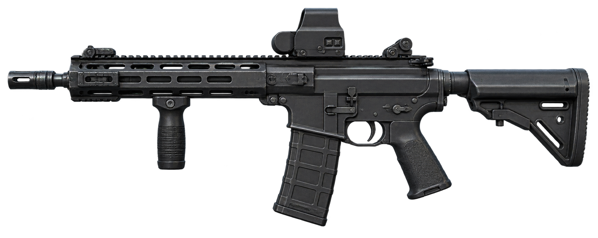
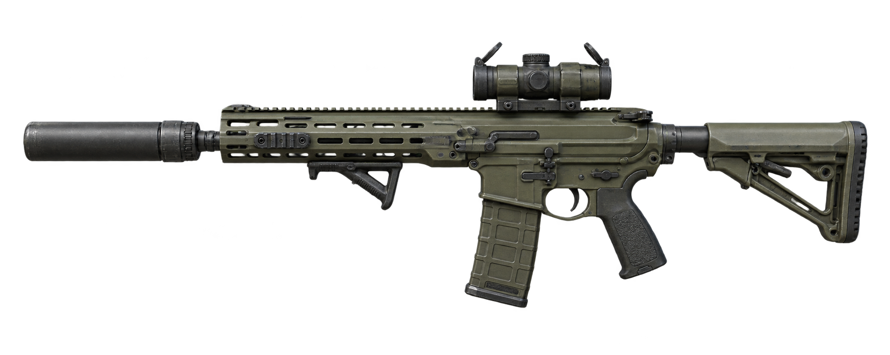
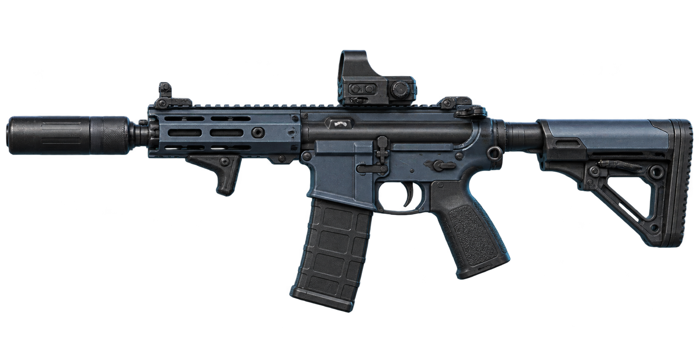
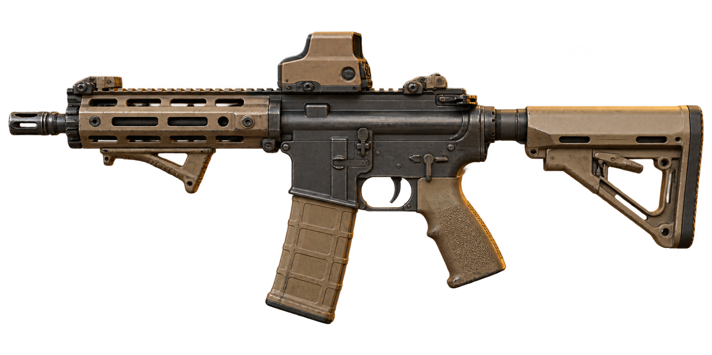
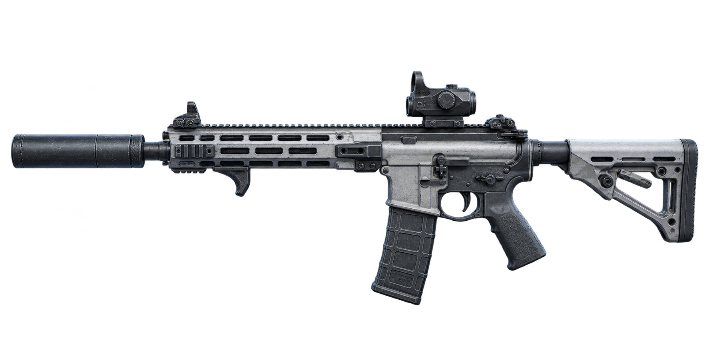

LIVE FEED 01M7 / TRANSITION

轮廓切换BLACKOUT → RIDGELINE
FIELD CONFIGURATION / 2026
同一把步枪，可以拥有截然不同的战场性格。探索 M7 与 K416 的六套视觉改装方案，从轮廓、材质到场景，找到属于你的那一款。

SELECT A PLATFORM
这里没有唯一的“标准答案”。点击配装卡片，切换主视觉与配件标签，观察不同配置如何改变一把枪的气质。
PLATFORM 01 / BATTLE RIFLE
厚重轮廓之下，是三种不同的节奏。
从近距机动到开阔地带的沉着观察。
以稳定视野与沉着轮廓为核心，让橄榄绿与深灰材质融入开阔地形。
点击卡片切换主视觉
PLATFORM 02 / ASSAULT RIFLE
更紧凑的体态，更直接的视觉语言。
为城市、机动与隐蔽场景各留一个答案。

X: 084.6 / Y: 026.2蓝灰与黑色构成冷静的城市表情，短小的轮廓让视觉重心更加集中。
点击卡片切换主视觉
ANIMATED VISUALS
扫描光束与配装切换由页面动画实时渲染。每一帧都来自上方的原创枪械概念图。


